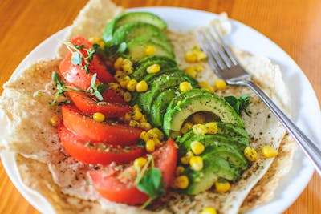

Simple Omelette Recipe
Ane easy and quick disk, perfect for aany meal. This classic omelette combines beaten eggs
cooked te perfection , optionally filled with your choice of cheese, vegetables, or .
Preparation time
- Total : Approximately 10 minutes
- Preparation : 5 minutes
- Cooking : 5 minutes
Ingredients
- 2-4 large eggs
- Salt, to taste.
- Pepper, to taste
- 1 tablespoon of butter or oil
- Optional filligs: cheese, diced vegetables, cookeds meats, herbs
Instructions
- Beat the eggs: In a bowl, beat the eggs with a pinche of salt and pepper until they are well mixed. You can add a tablepoons wather or milk for a fluffier texture
- Haat the pan: with a pinche of salt and pepper until they are well
- Cook th amelette :In a bowl, beat the eggs with a pinche of salt and pepper until they are well mixed. You can add a tablepoons wather or milk for a fluffier texture
- Add fillings (optional): In a bowl, beat the eggs with a pinche of salt and pepper until they are well mixed. You can add a tablepoons wather or milk for a fluffier texture
- Fold and serve: In a bowl, beat the eggs with a pinche of salt and pepper until they are well mixed. You can add a tablepoons wather or milk for a fluffier texture
- Enjoy: Serve hot, with additional sait and pepper if needed
Nutrition
Thie table below shows nutitional values per serving whithout the additional fillings
| coloris |
277Kcal |
| Carbs |
0g |
| Protein |
20g |
| Fat |
22g |